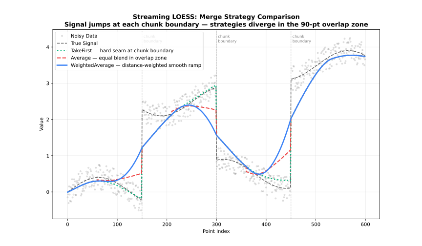

StreamingLoess API
For datasets that don’t fit in memory or arrive in chunks. Processes data incrementally, merging overlapping regions between chunks.
See also: API
StreamingOptions.builder() StreamingOptions.Builder
StreamingOptions options = StreamingOptions.builder()
.chunkSize(2000)
.overlap(200)
.build();StreamingOptions.Builder exposes all the same settings as Options.Builder (except returnSe, returnSorted, cvFractions/cvMethod/cvK/cvSeed, which are batch-only), plus:
| Setting | Type | Default | Description |
|---|---|---|---|
|
|
|
Number of points processed per chunk. Larger chunks reduce per-chunk overhead and give each local fit more surrounding context, at the cost of higher peak memory; smaller chunks bound memory tightly but increase the fraction of points that fall in overlap regions. A good starting point is balancing available memory against how much processing overhead per chunk is acceptable — match it to your file-read buffer or message-batch size to avoid unnecessary copying. |
|
|
|
Number of points retained from the previous chunk as context, so the neighbourhood at chunk boundaries isn’t artificially truncated. Points inside the overlap zone are fitted twice (once by each chunk) and reconciled via |
|
|
|
How overlapping chunk results are combined. |
| Strategy | Alias | Behavior |
|---|---|---|
|
|
Distance-weighted blend |
|
|
Average overlapping values |
|
|
Keep left chunk values |
|
|
Keep right chunk values |
See also: Merge Strategies

StreamingLoess.processChunk(double[] x, double[] y) Result
Fits and returns the result for one chunk. Each chunk is fit together with the trailing overlap points buffered from the previous call, then only the points that are fully resolved are returned — the tail of the chunk (the next overlap points) is held back internally, since it will be refit once the following chunk arrives and its estimate reconciled via mergeStrategy. This is what lets the adapter process a dataset far larger than memory allows, one bounded-size chunk at a time, without ever materializing the whole dataset at once. Call repeatedly as chunks arrive.
StreamingLoess.finish() Result
Flushes the overlap points still buffered from the last processChunk call. Because each call withholds its tail until the next chunk arrives to resolve it, the final chunk’s tail would never be emitted otherwise — always call finish once after the last chunk to retrieve it.
StreamingLoess.close()
Releases native resources. Safe to call multiple times. Implements AutoCloseable.
Result
processChunk and finish return the same Result type as Loess.fit, described in API. Fields tied to Batch-only options (standardErrors(), confidenceLower()/confidenceUpper(), predictionLower()/predictionUpper(), cvScores(), hatMatrix()) are always empty here.
Example
import fastloess.Result;
import fastloess.StreamingLoess;
import fastloess.StreamingOptions;
public class Example {
public static void main(String[] args) {
final int n = 20;
double[] x = new double[n];
double[] y = new double[n];
for (int i = 0; i < n; i++) {
x[i] = i;
y[i] = i + 0.1;
}
StreamingOptions options = StreamingOptions.builder()
.chunkSize(10)
.overlap(2)
.build();
try (StreamingLoess model = new StreamingLoess(options)) {
double[] x1 = java.util.Arrays.copyOfRange(x, 0, 10);
double[] y1 = java.util.Arrays.copyOfRange(y, 0, 10);
double[] x2 = java.util.Arrays.copyOfRange(x, 10, 20);
double[] y2 = java.util.Arrays.copyOfRange(y, 10, 20);
model.processChunk(x1, y1);
model.processChunk(x2, y2);
Result result = model.finish();
System.out.printf("y[0]: %.4f%n", result.y()[0]);
}
}
}y[0]: 18.1000